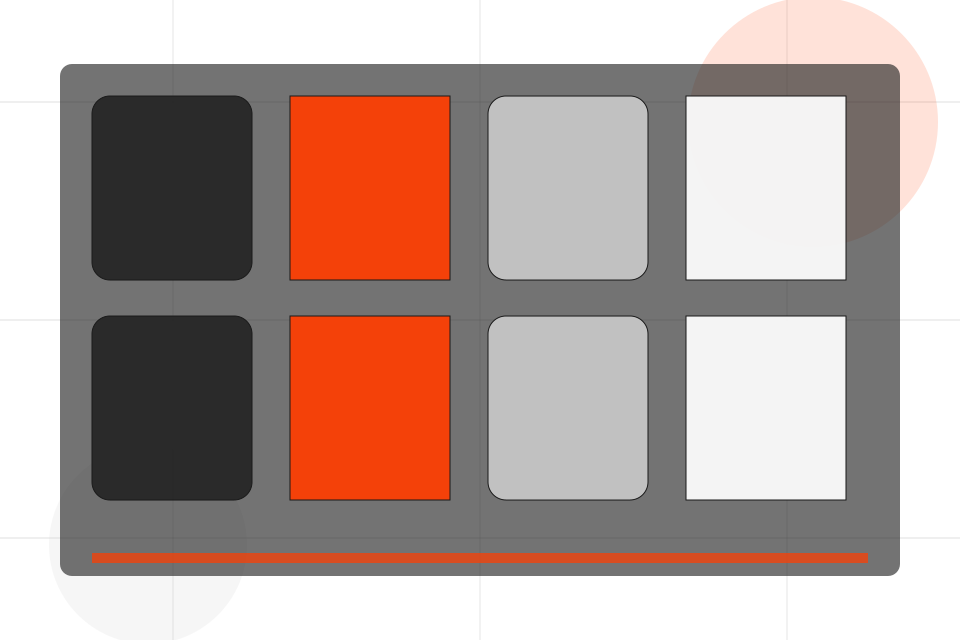
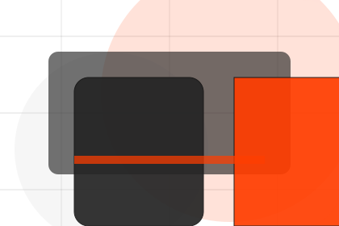
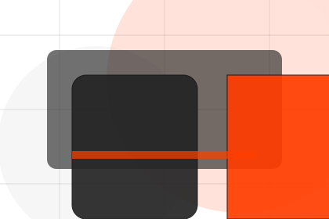
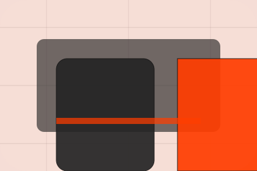

Coaches / 01
Coaches by Pulse
Coaches shaped for sports, fitness & recreation decisions.
Coaches opens as a clear sports decision hub: what Pulse offers, who it helps, why it matters, and which route to take first.
The first screen combines positioning, proof, primary action, and fast internal navigation, so people can act immediately or compare the rest of the coaches route with context.
Sports scopeCompare optionsRequest advice

Coaches / 02
Team
Team introduces the people, roles, or specialist credibility behind Pulse so the decision feels less anonymous.
The copy ties names, roles, credentials, or availability back to the decision on the page instead of treating profiles as decorative biographies.
Explore CoachesPulse structures team around role, credibility, and a clear next route so visitors can compare the block quickly before they join a class.
Join ClassCoaches / 04
Specialisms
Specialisms introduces the people, roles, or specialist credibility behind Pulse so the decision feels less anonymous.
The copy ties names, roles, credentials, or availability back to the decision on the page instead of treating profiles as decorative biographies.
Explore CoachesRole
The person, team, or specialist function connected to specialisms is easy to understand.
Credibility
Credentials, responsibilities, or availability are tied to the visitor's decision, not listed for decoration.

Handoff
The section explains how to move from profile interest to a practical conversation or booking path.
Coaches / 05
Profiles
Profiles introduces the people, roles, or specialist credibility behind Pulse so the decision feels less anonymous.
The copy ties names, roles, credentials, or availability back to the decision on the page instead of treating profiles as decorative biographies.
Explore CoachesThe person, team, or specialist function connected to profiles is easy to understand.
Credentials, responsibilities, or availability are tied to the visitor's decision, not listed for decoration.
The section explains how to move from profile interest to a practical conversation or booking path.
Coaches / 06
Style
Style introduces the people, roles, or specialist credibility behind Pulse so the decision feels less anonymous.
The copy ties names, roles, credentials, or availability back to the decision on the page instead of treating profiles as decorative biographies.
Explore Coaches- 01
Role
The person, team, or specialist function connected to style is easy to understand.
- 02
Credibility
Credentials, responsibilities, or availability are tied to the visitor's decision, not listed for decoration.
- 03
Handoff
The section explains how to move from profile interest to a practical conversation or booking path.
Coaches / 07
Availability
Availability introduces the people, roles, or specialist credibility behind Pulse so the decision feels less anonymous.
The copy ties names, roles, credentials, or availability back to the decision on the page instead of treating profiles as decorative biographies.
Explore CoachesPulse structures availability around role, credibility, and a clear next route so visitors can compare the block quickly before they join a class.
Join ClassCoaches / 08
Reviews
Reviews converts customer proof into a useful buying signal: the problem, the experience, and what changed afterward.
Proof stays believable by focusing on situation, service experience, and practical change rather than vague praise or unsupported results.
Explore Coaches
Situation
What the visitor needed before choosing Pulse, written with enough context to feel real.
Coaches / 09
Meet
Meet introduces the people, roles, or specialist credibility behind Pulse so the decision feels less anonymous.
The copy ties names, roles, credentials, or availability back to the decision on the page instead of treating profiles as decorative biographies.
Explore CoachesRole
The person, team, or specialist function connected to meet is easy to understand.
Credibility
Credentials, responsibilities, or availability are tied to the visitor's decision, not listed for decoration.
Handoff
The section explains how to move from profile interest to a practical conversation or booking path.
Coaches / 10
Join Class
Pulse closes the coaches route with a clear action, a quick reminder of the value, and a low-friction way to join a class.
Visitors who are ready can use the primary action. Visitors who are still comparing can scan the section links, proof, and support routes before they join a class.
Join ClassThe final block keeps the choice simple: act now, compare one more proof route, or send enough detail for a focused response.
Join Classprogress and belonging
Join Class
A fitness site with athlete-scale hero, program cards, coach proof, schedule filters, and membership CTAs. Coaches ends with a direct path to join a class, plus enough context for visitors who still need to compare.

Join ClassNotes
Fitness guidance should be adapted to health status and professional advice where needed.